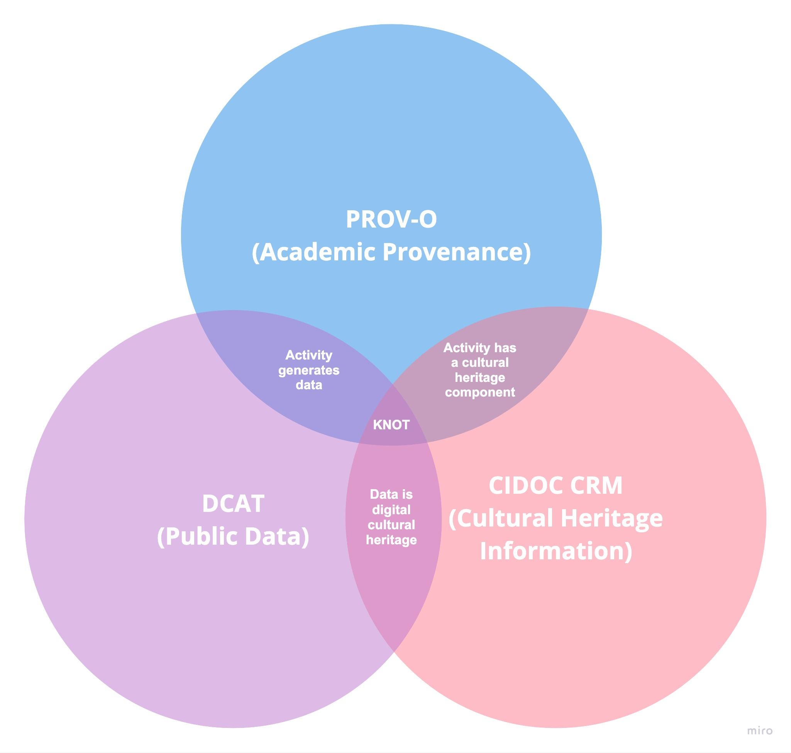
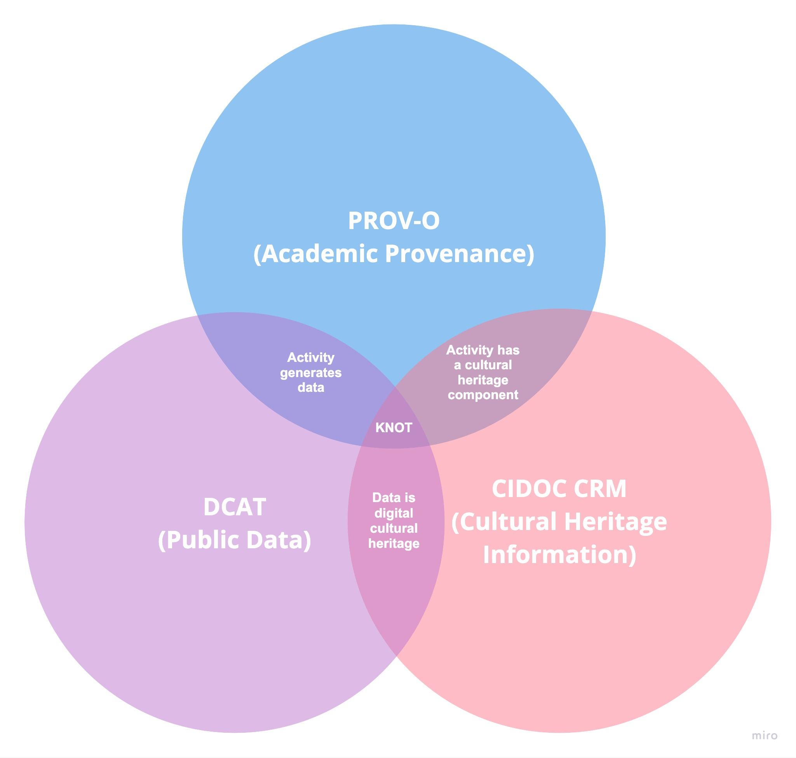

Il KNOT Data Model - KNOT-DM
Una linea guida di riferimento per la creazione di descrizioni di progetti e prodotti della ricerca, utilizzando un vocabolario comune e facilitando la diffusione di buone pratiche.
Il data model concettuale KNOT-DM descrive i dati e la rete di collegamenti semantici tra essi. Il data model nasce per facilitare la scoperta di conoscenza latente e valorizzare la ricerca accademica come patrimonio culturale digitale.
KNOT-DM è stato sviluppato per rispondere alla domanda di ricerca centrale del progetto: come si possono descrivere e valorizzare i progetti di ricerca accademici e i loro risultati come esempi di patrimonio culturale digitale? A tal fine, KNOT-DM si concentra sull'intersezione di tre domini che rappresentano aspetti specifici di questo argomento - il mondo accademico, dati pubblici e patrimonio culturale digitale - al fine di facilitare sia la descrizione della ricerca accademica come patrimonio culturale, sia di favorire l'interconnessione con i sistemi esistenti che già documentano l'attività e i risultati della ricerca, come i repository (sia istituzionali che pubblici) e i siti web dedicati, per evitare la duplicazione di dati e informazioni esistenti. Il data model è organizzato in tre segmenti interconnessi, ciascuno dei quali riflette uno dei domini, che si occupano di entità, attività, agenti, temi, relazioni e informazioni spazio-temporali. I metadati creati con KNOT-DM costituiscono la base del knowledge graph di KNOT.
I Venn diagram riportati nella figura 1 riassumono l'intersezione di domini su cui si basa KNOT-DM e gli standard equivalenti che utilizza. Si vede la sezione Struttura per maggiori dettagli su come il modello di dati integra ogni standard.
 

Il KNOT-DM è concepito per essere flessibile e riutilizzabile, nonché per consentire la sua potenziale integrazione nell'infrastruttura della Digital Library e la connessione ai sistemi esistenti. In quanto tale, è composto da concetti complementari provenienti da standard esistenti e riconosciuti a livello internazionale. È liberamente disponibile per le università e altre parti interessate, che possono utilizzarlo per modellare i propri dati per uso indipendente o per consentirne l'inclusione nel progetto pilota KNOT.
KNOT-DM consente di registrare le seguenti informazioni:
- Attività del progetto di ricerca - chi, cosa, dove, quando e come.
- Output dei progetti di ricerca - gli oggetti digitali creati dalle attività dei progetti di ricerca.
- Il data model è sufficientemente flessibile da consentire la descrizione di vari output possibili, come software, siti web, documentazione, servizi web e raccolte di dati.
- Input del progetto di ricerca - le entità che alimentano un progetto di ricerca come oggetti fisici, persone, luoghi e temi.
- Agenti - responsabili della creazione e della pubblicazione di progetti e risultati di ricerca, dall'individuo all'organizzazione attraverso le unità organizzative (come i dipartimenti o i laboratori) e le loro sedi.
- Relazioni - tra attività e agenti, ma anche, in particolare, tra gli output e input della ricerca (e.g. influenza) e tra gli output di diversi progetti di ricerca (e.g. riuso).
- Informazioni spaziali e temporali - dei progetti ma anche quelle registrate negli output, come ad esempio i luoghi citati in un testo o il periodo di tempo coperto dai dati.
- Temi - come il tipo di attività di ricerca, il tipo di risultati, le tecnologie utilizzate, le discipline accademiche coinvolte e gli argomenti primari e secondari della ricerca. Questi temi sono descritti utilizzando una selezione di vocabolari controllati e autorità specifiche.
La figura 2 riassume il flusso di lavoro del KNOT-DM, in linea con gli obiettivi del primo anno del progetto.

Struttura
Scopri di più sui diversi segmenti che compongono il KNOT-DM.
Moduli
Scopri di più su come utilizzare i diversi moduli di KNOT-DM.
L'Ontologia
Scopri di più sull'ontologia KNOT che esprime il Data Model in RDF.
Vocabolari Controllati
Scopri di più sui vocabolari controllati utilizzati in KNOT-DM, compresi quelli creati appositamente per il progetto.